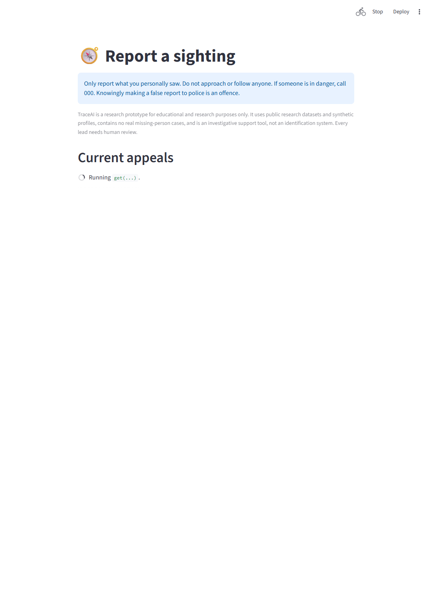
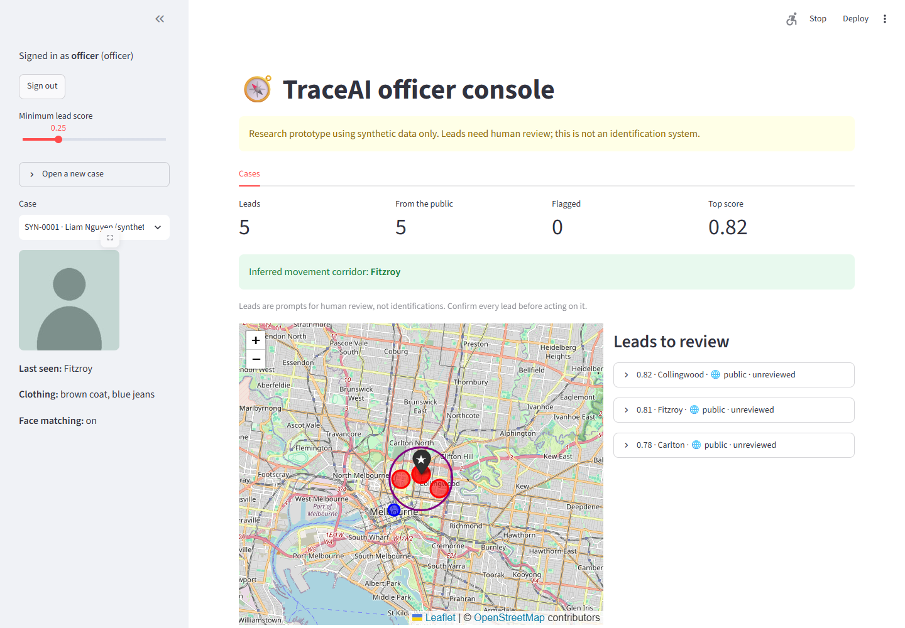
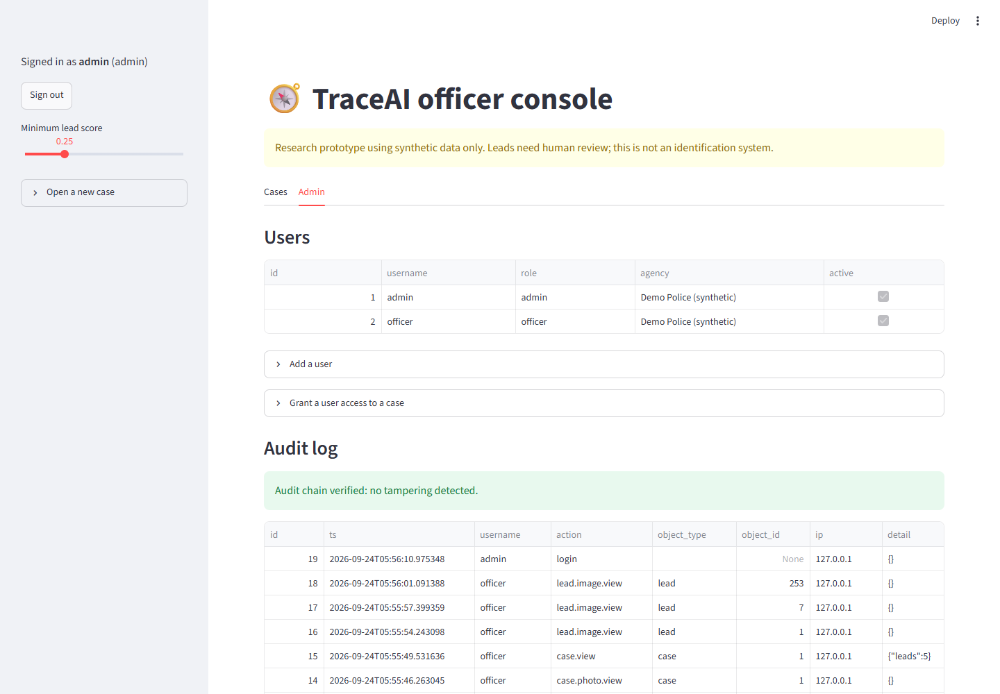

Stalking via a “missing” report
Cases open only with a police reference and a family-violence check.
Research prototype · synthetic data
Face, text, place and time fused into one explainable score. Police review the leads. The public can only report.
The flow
Every tip takes the same path. Nothing acts on its own.
Live demo
Click a lead to see why it ranked where it did.
Scoring
Eight reports about the same person, scored by the real code.
Results
Precision@3: true sightings among the top 3 (random scores 0.07). Synthetic benchmark, 30 cases per setting.
The app
Placeholder avatars only. Click a screenshot to enlarge.



Architecture
The public app has no officer routes at all.
Safeguards
Each control has an automated test.
Cases open only with a police reference and a family-violence check.
A tip returns a receipt, never a match.
Rate limits and flags. Tips only join a review queue.
Per-case access and a tamper-evident audit log.
Off unless the photo is attested as lawfully obtained.
Closing a case deletes its photo, face data and leads.
Engineering
Checks that can fail, run on every change.